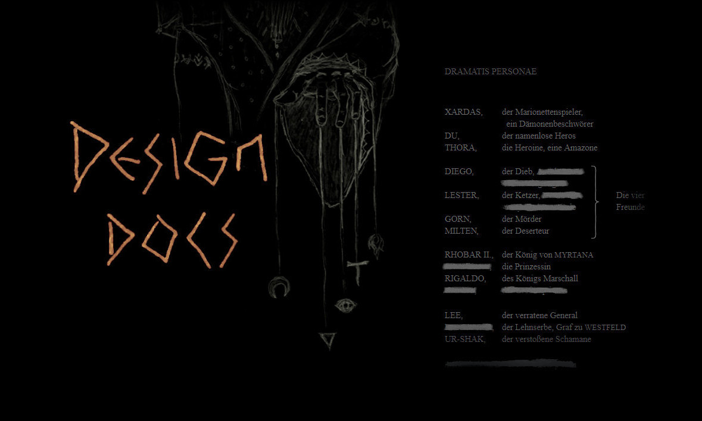
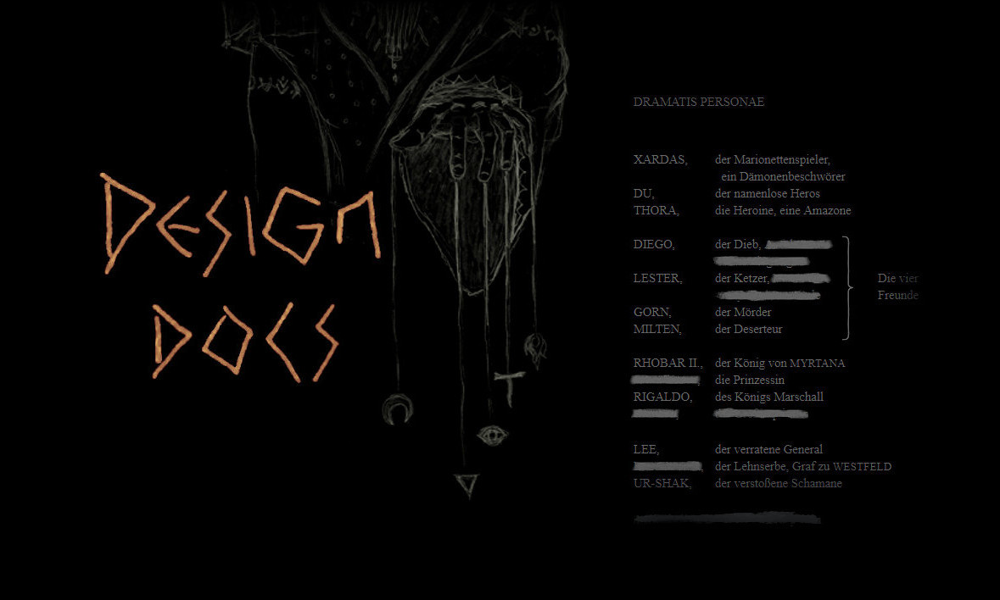
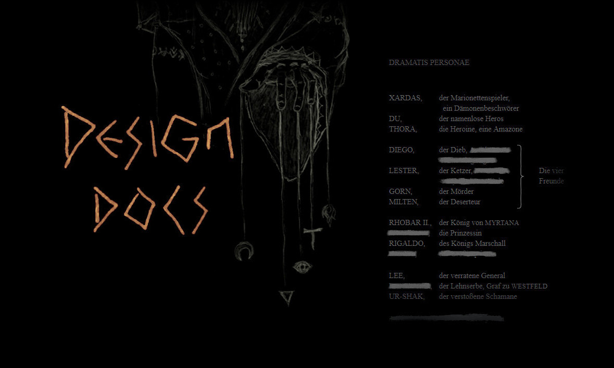
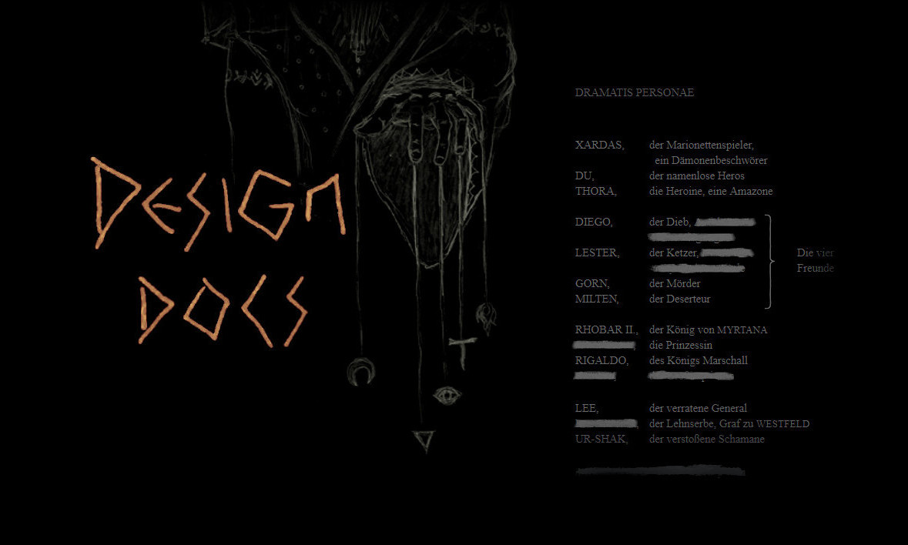

 

A gothic drama narrated like a greek tragedy, with the game world serving as the stage for a meaningful story. Acted out like a virtual tale, a philosophical reflection and a timeless allegory with different plots depending on the players decisions and playstyle, PHOENIX is an Immersive Sim. Set in a mystic valley full of conflict, decay and atmospheric density, completely designed by hand, it bears a unique aesthetics clad in retro graphics, with a gameplay focused on immersion by visualisation: No numbers, no statistics, just roleplay.
A Gothic (Alpha) Reboot; based on and conceived as a genuine Reboot of GOTHIC™ (2001), inspired by the original vision of the four founders of Piranha Bytes, PHOENIX is what GOTHIC should have been. In order to preserve and to present this vision inherited by our project we have created the [Gothic Archive](https://gothicarchive.org), where we publish diverse pre-release material that we have been provided by former Gothic developers to [rescue the design](https://phoenixthegame.com/specials/20thAnniversary/AJourneyToMike.html). All these ressources and the underlying design philosophy and artstyle are analysed in a collective effort of "alpha research" (extensively documented in our design concept, short "Phoenix Docs", presented here in digital form), on the basis of which we continue the development where they left off, without compromises and beyond corporate constraints.
Under the pressure of time, expectations and official demands, the team was torn apart by contradictory ideas and interpersonal struggles, shaping the final product into a mere fragment of their original vision and culminating in a conflict about a worthy successor, that led to the cancellation of the first, forgotten Gothic Sequel. A realisation of this unfulfilled and fragmented vision, PHOENIX is the mosaic, a reconstruction of "the Alpha" of GOTHIC (that had *Phoenix* as its working title) and the original Sequel developed into a worthy successor. We attempt to realise this dream, as we imagined the game to be by the words written and images shown to us before release, to reconstruct and turn it into one harmonious and coherent whole. We attempt to realise all the contradictory ideas of the founders, bring them to an end, and maybe thereby help, at least a bit, to heal the old wounds of their clash of dreams.
PHOENIX is not an official title of the GOTHIC franchise, it's an independent and non-commercial project by [PhoenixTales](https://phoenixtales.de), a small indie-team of freely associated developers from different corners of the world. Read our FAQ.